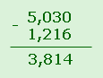

Чтобы вычесть из одной десятичной дроби другую, нужно:
записать вычитаемое под уменьшаемым так, чтобы запятая оказалась под запятой;
выполнить вычитание, не обращая внимания на запятую;
запятую в полученной разности поставить под запятыми в уменьшаемом и вычитаемом.
Вычитание десятичных дробей выполняется поразрядно. Тысячные вычитаются из тысячных, сотые из сотых, десятые из десятых, единицы из единиц и так далее.
Если в уменьшаемом число единиц в разряде меньше, чем в вычитаемом, то необходимо "занять" единицу в более старшем разряде.
Если у уменьшаемого и вычитаемого после запятой разное количество цифр, то количество десятичных разрядов можно выровнять, добавив незначащие нули.
Пример: 5,03 - 1,216 = 5,030 - 1,216 = 3,814

Если вычитаем десятичную дробь из натурального числа, то натуральное число нужно записать в виде десятичной дроби. Для этого после разряда единиц ставим запятую и дописываем столько нулей, сколько разрядов после запятой стоит в десятичной дроби.